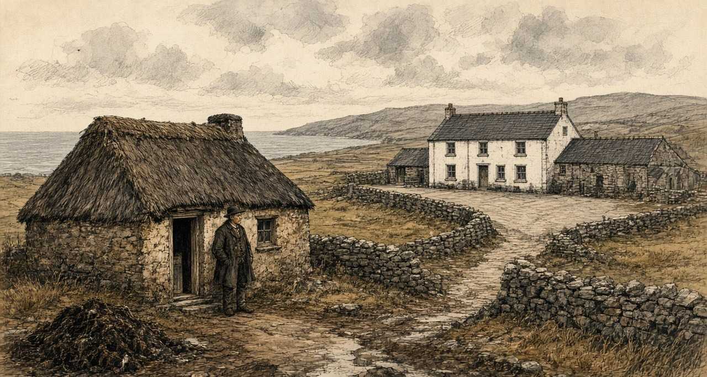
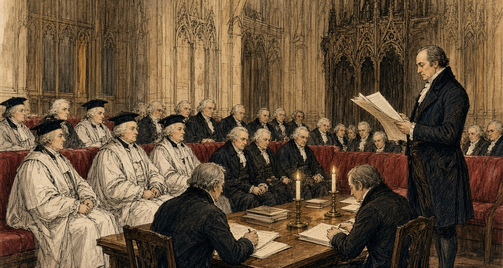
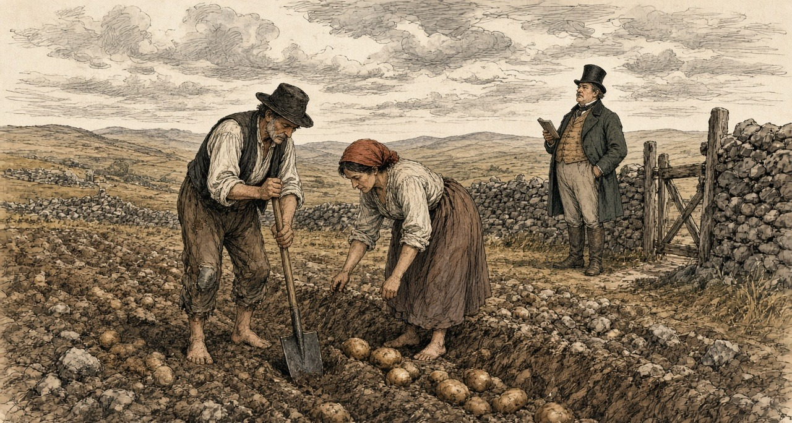
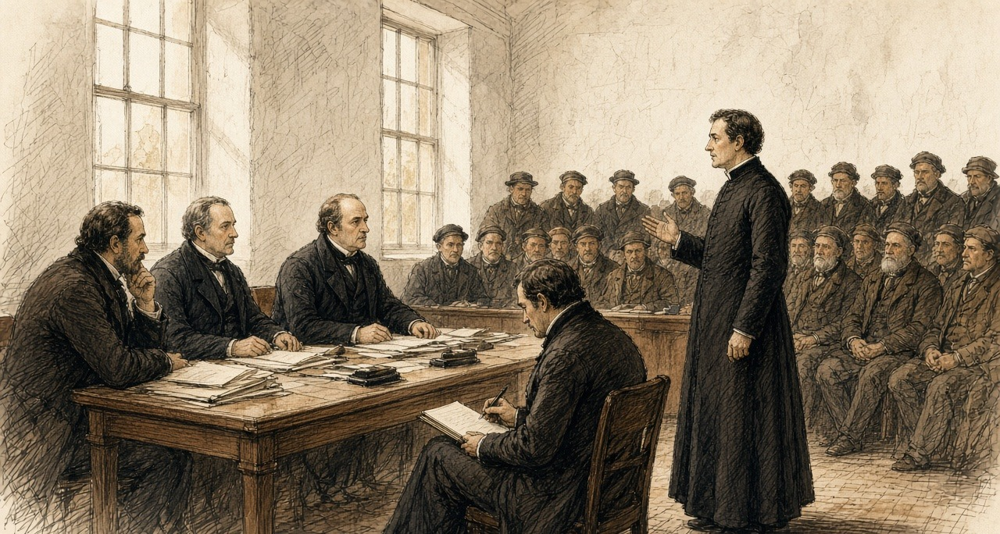
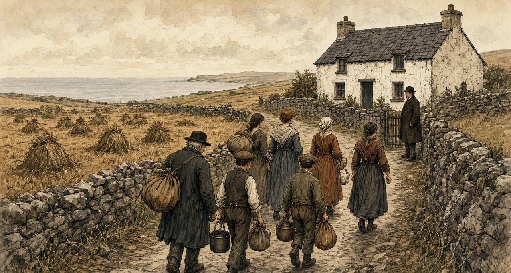
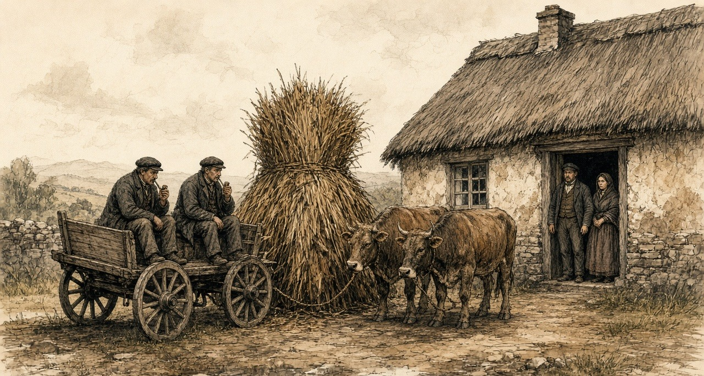

Chapter 7
Crotty's House, 1832
Moyarta, Kilrush, Ennis, Scariff, Limerick and Westminster, 1831 to 1844
The question put to the parish priest of Moyarta was about money. The commissioners reminded him that, by his own account, tenancy at will lowered the rent the people would be willing to give. What did it do to the tenant's condition, and to his farm? The Reverend Malachi Duggan answered that it "paralyses the industry of the tenantry," and then he told them about a house.
"A poor man built a nice dwelling-house; he had no lease. The farm was given to a middleman, and he took a fancy to the house, and he picked a quarrel with the man, and threw him out on the highway. He built himself the house, and his wife died, and the man himself died."
They asked him the man's name. "Crotty." They asked how long ago. "About twelve years." It was Friday, the 23rd of August 1844, at Kilrush in the county of Clare, and the printed minutes of Her Majesty's Commissioners of Inquiry into the State of the Law and Practice in respect to the Occupation of Land in Ireland number the answers 13 and 14 of witness No. 608. Twelve years back from that August is 1832.
The priest had more to say about the house than about the man. "There was no improvement made in my parish for eight or nine years afterwards, for everybody liked the house; it was a pretty thing, and paved all round, and back offices built next to it."
A paved yard and back offices are things a man pays for. The house had been the best argument in the parish for spending money on a holding, and then it became the best argument against it.
* * *
The parishes of Moyarta and Kilballyowen, the years after
Duggan's parishes, by his own account, held 22,000 English acres, "principally tillage." The general run of farms was from three acres to fifteen. "There are not many farmers in it who hold forty acres of land—not more than three or four." Leases were few. "From year to year. We have not many leases at all."
Is knowledge of that house at every soul in the parish. A fine neat thing to look upon. flags laid flat around the door of it, and the out-offices built snug against the gable, and is it not Martin Crotty himself that raised it with his own hands, and is he not out on the road from it today?
Are the few acres at me from year to year, the way they are at the whole townland. Is the strength in my arms yet to quarry the flags and pave the middle of my own door, and the stones lying idle in the ditch. Do not lay to hand a stone. Does no man in Moyarta lay a stone on a wall. Should a stranger ask what sloth on us, I would only point my finger down the boreen at the roof of Crotty.
Were a lease at me. would credit be at me. Says the priest the truth of it from the altar. Walks a man with a lease into the bank in Kirush, and is the bank straight with him and he straight with the bank, at six and the hundred. Is there no mercy on the pound that breaks the back depends under the usury so heavy on the pound that breaks the break undergoes the bitterest before a penny of the principal is touched. And when the breath goes out of a tenant it will, and is the mould not earth before the man in the nail comes on. So stays the shilling seen in the freeze coat, and stays the green puddle before the threshold, and is no covetousness put into the eye of the middleman riding past.

Duggan gave the money side of it in his own words before he ever came to Crotty. Asked whether the people wanted leases at the present rents, he said they "would rather have leases and pay a high rent, than have the land without a lease at a low rent. The reason is, when they have leases they have credit, they have a stake in the country, and can get money from the banks; but when they have no lease they have no credit in the country, and when they die their widow is likely to be turned out. I think it much better for the people to get the money from the banks rather than the country usurers. In dealing with the banks they are very punctual, but in dealing with the usurers, the interest is so high they cannot pay interest and principal; the interest is often fifty per cent."
A lease was not only a right to stay. It was the paper a bank would lend against. Without it, a family's borrowing was done at fifty per cent, and a family's improvements were done at the risk of the house itself.
* * *
The House of Lords, Westminster, 8 March 1832
In the year the priest's reckoning puts Crotty on the highway, the money that left the small farms of Ireland was being argued over in Parliament under another name. On the 8th of March 1832 the Marquis of Lansdown moved the first report of the Lords' committee on tithes in Ireland. Tithe was the Established clergy's share of the produce of the land.
Lansdown wanted it commuted into a fixed charge. He described what the clergyman did under the old system: "making ten or twelve collections in the course of a year: raising one part of his income by the tithe on potatoes, another by the tithe on flax, and so on through the different articles of agricultural produce." He spoke of "the collision between the clergyman and his flock—always recollecting that the flock do not receive, or do not think they receive, any benefit from the services of the clergyman."
The committee had found the payment of tithes resisted in many parts of the country, "sometimes by illegal acts and outrages, more frequently by combinations among the people, by which they availed themselves of such legal difficulties as enabled them to delay or prevent the payment." Lansdown read their lordships the evidence of the Archbishop of Dublin. "But as for the continuance of the tithe system, it seems to me that it must be at the point of the bayonet—that it must be through a sort of chronic civil war."
The committee's remedy for the clergy was money from the Treasury. It recommended that the Government be empowered to grant them assistance "out of the Consolidated Fund, in respect of the tithes due for one year," and that it have the power "to levy arrears in the districts where the resistance has been most effectually organized" to get its advances back. A clergyman who could not collect his tithe would be paid by the Government, and the Government would collect the arrears.

In the west of Clare, the disturbances of that time had another name. Duggan told the commissioners in 1844 that his parishes had not had many outrages "for forty years. In the year 1831 only one—a house was broken belonging to a middleman. None of those who had land or any stake in the country joined the Terryalts; they were persons who had no interest and no tie in the country."
No interest and no tie: the priest meant men with no land. In the east of the county a magistrate gave the commissioners a reason for 1831 that was a matter of rent.
* * *
Mock ground, the half barony of Tulla, 1831 to 1844
James Molony of Kiltanon, near Tulla, landed proprietor, magistrate and deputy lieutenant of the county of Clare, gave evidence at Scariff on Tuesday, the 20th of August 1844. He described a kind of letting that had no lease and, in his opinion, no law.
"The con-acre system, known in this country by the name of mock ground (whence the denomination comes I do not know), prevails extensively, but from various causes the ground applicable to con-acre has become so scarce as not to meet the demand. I must say for myself, the origin of agrarian outrages very much arises from the want of the con-acre land, and the lower orders of people conceive that the farmers and landed proprietors ought to make sacrifices to give them the means of subsistence, for which they are unable to pay, because their labour is not required on the farms, the farmer having the usual set of labourers sufficient for his purpose."
Then he gave the price. "The price of con-acre land varies from £3 10s. to £8 per Irish acre, from £2 to £5 the English acre; the high rate is where permission is given to burn, or where the farmer furnishes the manure." Stubble ground fetched "£2 10s. an acre ready money. This description of land used to be given rent free, and ready ploughed, to persons who had dung to put upon it." Payment was "recovered by distress and sale of the potatoes, or by civil bill process." The usual wage was eightpence a day. The outrages of 1831 in his district, he said, "then originated in the want of con-acre land."
Medium land in the same district, Molony said, let to farmers at about twelve and sixpence the statute acre, "being £1 Irish." The labourer's potato ground, taken by the season, cost three and a half times that at the lowest, and eight times it at the highest.
For the one crop only is the mock ground set to me, and not an hour beyond the digging. Is silver from my hand for the former, or the sweat of my back in the harvest, or a share of the two. Eightpence is the wage of the long day when a day's hire is in it, and his own servant-boys at him for the constant work, so is the hiring scarce.
If he gives leave to pare the sod and burn the baitin for the ashes, is the rent heavier on me. If it is his own dung that goes out on the ridge, is it heavier again. Cheaper is the oat-stubble, ach is it silver down on the nail before the spade goes in. In the old days, what was ground given free, and the plough run through it, to any poor man that had the scraping of the road-mud gathered at his cabin door to spread on it.
Are the potatoes at me while they are under the clay and no debt on my head. if there is a shilling wanting on the gale day, they are at the farmer. Can he put the padlock on the pit, or cant them to strangers at the edge of the ridge, or drag me before the bench at the sessions. Is there neither lease nor parchment between the you of us, only the stalk in the night.
In the year of the Terrayts, when the mock ground was denied to the boys and the grass-bullocks put to walk the good land, did we go in the night with the spades and turn the sods upside down before the moon set. Testifies the magistrate himself that the hunger for the potato-ridge was the mother of that work.

Molony closed with a recommendation. "I think the law of landlord and tenant does not apply to con-acre, consequently there is no law that applies strictly to that kind of tenure, and I think a blank form of letting would be very desirable."
* * *
Ennis, Wednesday, 21 August 1844
William Daxon lived at Kilmorane, two miles and a half from Ennis. He was "a farmer and land agent," and the district he knew best ran "from this to Kilrush, and the western part of the county." He gave the commissioners the rents of the ordinary land: "the average of good land is from 30s. to £3 10s. an acre," wheat land from forty shillings to two guineas. Then they asked him about con-acre.
"Does the con-acre system prevail in the district?—Yes, very much." The usual rent? "From £8 to £10, and in some cases £12." Wages? "Eightpence a day if you have standing labourers through the year; and if not, if you bring in labourers, it is 10d. to 1s. for a man casually employed."
So a farmer paid thirty shillings to three pounds ten for an acre of good land, and a labourer paid eight to twelve pounds for an acre of potato ground, by the season, on eightpence a day.
Daxon told them how the rent came in. An agent "will come into Kilrush for two days; he receives rent the fifth of July, and thirtieth of December; that rent becomes due in the November and May previous: that man cannot spend his time there to wait the convenience of an immense number of cottier tenants; they are obliged to pay it on a certain day to him." If they could not, the remedy was distress, "distraining them and putting on keepers." The keeper "gets 1s. for a day, and 1s. for the night." A man in arrear paid a shilling a day and a shilling a night for the man set to watch his goods.
He told them also what credit cost a small tenant who had been given more land. The new holders had not capital enough. "They are obliged to go to the banks at the recommendation of some gentleman, who will represent them as honest and proper people: they get £15 or £20 at six per cent." Six per cent, with a gentleman's word. Fifty per cent, Duggan would say two days later, without it.
* * *
The courthouse at Kilrush, Friday, 23 August 1844
Fourteen witnesses were heard at Kilrush that day, numbers 599 to 612. Before the priest came in, the commissioners had already heard what a distress cost in the barony. Mr. Patrick Slattery, a corn dealer and poor law guardian, told them that "lately they have had recourse to putting a keeper over the crop, and another in the house, and charging 2s. for each for every twenty-four hours, and in some instances I believe more." Asked whether the tenant should be held to a fixed rent if prices fell, he put the value of a lease into shillings. "I would rather pay 25s. with fixity of tenure than 15s. without it, for when there is fixity of tenure a man will raise capital, or by industry, and improve the land, and make it more worth 20s. than 10s., but now he may do it and then be turned out."
Mr. Robert Fitzgerald, who lived near Kilkee, a lieutenant in the Clare militia, complained that his landlord's people had kept him from the sea-weed his lease gave him. "My neighbours get £5 an acre for the sea-weed on the shore; and in consequence of my right being denied, my land is not worth one-third of it." He gave the reason he had been given for the sea sand: "the sea shore at Kilkee is very much frequented by bathers; and if the sand was removed, they have found out that it would not be so smooth and pleasant for the bathers."
Then Duggan was sworn. He told them that the tenants on the two properties in his district under the management of the courts were "miserably distressed," and blamed "the avarice and rapacity of those who take the land under the courts, and not the courts." He gave them the wages: sixpence a day with food for a man in permanent employment, eightpence from a farmer, tenpence in the hurried period of spring. "There is no person in my district to employ them, except casually."
He gave them the one agrarian crime of the past year, and it was about land and arrears. "There was a poor widow who got in arrear to the amount of £20, holding under middlemen." She was ejected and "got a little hut on the other side of the road." When the land was handed over to another man and he built a new house on it, "they tumbled the house to the ground at night." The priest called a public meeting the next day. When the man went to rebuild, "they got out again another night, and took out four guns, and broke in the door of his brother, and then he was discouraged making any improvements upon the land." In the end there was a compromise. The widow "got back six acres, and she is living upon it; and the other man has got the other six, and they are living in amity, the animosity died away."
He told them that on the Westby land there was now "a better order of things established. Mr. Nicholas Westby, of London, divided the land of the tenantry into divisions, and put each man's division by itself, and reduced the rent so low that they could not complain if they got leases at the present moment." He had listened to Westby speaking to his agent: "Let all things be as they are; let in no more tenants, and we will turn out no man: but there are no more sub-divisions to take place."
Asked whether the land of the country was held by absentee landlords, he said: "All of it." The agents? "No; except one man, all the agents of the landlords are absentees." He told them whom the people feared. "Unfortunately in this country the tenantry are more afraid of the under-agent than they are of the landlord. They expect always generosity from a gentleman, but they expect nothing but perfidy from those persons in the employment of an absentee landlord."
What he wanted was simple. "I mean a long lease. I mean some system, as in England, that the tenant would not be turned out when he paid his rent; or if he was turned out for the sake of any domestic improvements of the landlord, that he should get some remuneration for his improvements."

* * *
The same room, the same afternoon
The next witness was John Lynch, who gave his address as "Newbridge, by the side of the road." He had held four acres at Moydalla under Colonel Wyndham, one of upwards of thirty in the same holding, all bound "one security for the other." Fifteen were turned out. He owed nothing. "Some days afterwards he gave me £8, after my house was thrown down." It did not carry the family through: "the compensation did not buy provision for myself and family for the year following." Had he any land now? "No, not the breadth of this table."
Then the clerk wrote: "Patrick Crotty, sworn, and examined through an interpreter, who was also sworn."
The questions went to him through the interpreter, and his answers came back the same way. The minutes keep only the English.
He had lived on land belonging to Mr. Westby. He was removed from it "about eight years ago." He had been living with his father and mother. "My father built five houses, and he was one of the most settled tenants upon the farm." They were dispossessed "by Tom Pilkington." Had Pilkington taken a lease of the lands from Mr. Westby? "He said he got a lease." Were the Crottys' lands in it? "Yes."
Did he allow them anything for the house or the improvements? "No. My father paid £36; and after paying him that sum, he ejected him."
"Did Thomas Pilkington allow your father any thing for the house?—No; and after he was ejected, he gave £7 to be allowed to stay in the house a limited time; and after the winter quarter, he was thrown out, and went into a shed on the side of the road, by which my mother got cold and died."
Was Pilkington any relation to the agent? "The agent was father-in-law to Thomas Pilkington."
After the ejectment was served, the son said, "he proceeded as rapidly as he could, and he brought the habere and ejected them under it." Possession was taken "in or about the month of September. The harvest was cut and down." No application had been made to the present Mr. Westby. "Some application was made to the former Mr. Westby by the tenants, and he made a promise to let them have the land; but he broke his promise, and gave them to a middleman."
The family went to another little tenement of two acres. "Mr. Keane became landlord of it, and gave us four acres in addition to that." Patrick Crotty still held the six acres, at Caharsavaun. His last answer was about the rest of the family. "I have a brother and four sisters, who are actually paupers."

The minutes do not say that the priest's Crotty and this witness's father were the same man. They put the two accounts one page apart, on the same afternoon, both turning on a middleman. The priest put the eviction about twelve years back. The son put it about eight.
The man after him, Patrick Fitzgerald, had held about three acres under Mr. Vandeleur. He had built a house and spent "upwards of £700 about my own farm," on a promise and without a lease, and paid the masons "3s. 6d. a day." His rent was one pound a year. He was put out "seven years last May, with ten in family," by "a Dublin ejectment." "It was for non-title they put me out." He owed nothing, "only £1, and they would not take that in consequence of a point of law." The compensation was "only £5 he gave my wife, who fell ill of the fever and erysipelas in the leg." "I took away the windows and doors." The Vandeleur agent, Francis John Fitzgerald, told the commissioners next that the estate was "over 20,000 statute acres altogether, and the population is very great."
* * *
Appendix B, No. 73
The appendix to the volume prints statements from gentlemen named in the evidence, in reply to it. The answer to Patrick Crotty came from Marcus Keane, esq., who wrote that he had heard the particulars at the time "from the persons concerned, most of whom have since died."
"The facts are these:—The farm of Kiltrellig was held by Richard Pilkington, as middleman, under a lease of lives, at the expiration of which the late Mr. Westby agreed to re-let to Thomas Pilkington, to whom a lease was made in 1834. Much factious opposition was raised at the time by the tenants in possession, and Martin Crotty (the father of Pat. Crotty, the witness), with others of his family, were amongst Mr. Pilkington's most strenuous opposers. Not satisfied with using the most provoking and abusive language, his son on one occasion openly threatened Mr. Pilkington's life, who, to prevent the spread of such disaffection, was compelled to serve an ejectment, and the eviction of the party from the land subsequently followed."
On the money, he wrote: "I believe that Crotty's statement, with regard to having paid £7 for the use of his house for a limited period, to be wholly untrue. Had it been otherwise, it could not have escaped me, as I was perfectly conversant with Mr. Pilkington's affairs at the time. A short time after Crotty was dispossessed he got another farm of nearly equal value, at Clohanesevau, which adjoins Kiltrellig."
Keane did not answer the £36. He did not mention the five houses, or the shed by the road, or the mother. He gave the farm a name, Kiltrellig, and the father a name, Martin, and the new lease a year, 1834. Between the priest's twelve years, the son's eight and the agent's lease, the eviction falls somewhere from 1832 to 1836. The record does not fix it closer than that.
The priest had said the middleman took a fancy to the house. The gentleman said the family were put out for their tongues. Neither denied that Thomas Pilkington got the lease and the farm, or that Martin Crotty's family left it.
* * *
Limerick, Monday, 26 August 1844
Three days later the commission sat at Limerick, across the Shannon from Clare, and the Clare money came up again.
Mr. Daniel Cullen was a grocer at Thomond Gate and a farmer in the barony of Bunratty, and a poor law guardian. He had counted the people who came into three streets of his parish in the previous three years from the country: 126 to the High-road, fifty-six to Mass-lane, 230 to the New-road, "making a total of 412 persons in that part of the parish." From where? "Some from Limerick, but most generally from the county of Clare."
"They generally come in suffering under the greatest possible poverty. So great is their poverty, that they generally occupy the most wretched hovels that can be found." He had found "in some cases as many as twelve persons living in a few square yards." Their diet was potatoes. "At this season of the year they get a little milk, and in the winter season they may get a few herrings." Wages in the city were "about 10d. a day without food, when it can be obtained." He had taken one of the city members into one of the houses, "and he felt that he was self-degraded after leaving the miserable hovel he had visited."
Across the bridge from the Clare side came we in onto the new-road, and is the whole street packed with our own countrypeople. Was no day's highre to be got west in the parishes, and is there little better inside the walls of the town, for so many of the banished crowded in at the gates that one man's hunger is eating another man's wage.
Are twelve of us lying down together in the four paces of this cellar. The wet potato on the board. A sup of sour milk in the summer. In the dead of winter, a salt tail of a herring to give a taste to the mouth. Go the men out in the grey of the morning to stand in the rain at the hiring-cross, and come they back at nightfall with the wet soaked into the bone, and goes the cold into the joints of them, and the pains, until they are stretched on the straw asking for the dispensary ticket.
Came a big gentleman from the Parliament in through the low door the other day, and Mr. Cullen the grocer showing him the way. Stood he in the middle of the floor with his hat touching the rafters, looking at the rags on the children. Went the blood from his cheeks with the stink of the place, and went he out into the air again as fast as his legs could carry him.
Cullen told the commissioners what a distress could cost: "I have known a case of a tenant's property being seized for rent, and there were two men upon the premises for fourteen days, and he was charged 2s. 4d. a head for each man for twenty-four hours, whereas the usual wages for men at that time was only 8d. a day." He told them what a farm cost, before the rent. "In many cases you have very little chance of a farm without being first able to bribe the agent." The commissioners asked for an instance. "In the county of Clare, on the lands of Quinpool, on the property of Benjamin Finch White. I had occasion to make application to the landlord to take up ten acres of land from him. I had to give the agent £20; it was never introduced into the receipt or into the deed I received." He had a lease of twenty-one years. The agent "was a brother to Mr. White, the landlord."
Benjamin Finch White answered in the appendix, as No. 74. "In 1838 I set a farm to Mr. D. Cullen, which contained about 124 Irish acres; but that I never was aware that he, or two other tenants who took similar farms from me at that time, had paid any money to my agent, or had given any thing to him for his interest with me to get them the land. I beg further to say that I am very much opposed to such a system, and also, that I have collected my own rents since 1838." He did not say the twenty pounds had not been paid. The landlord's acreage and the tenant's do not agree, and the printed record leaves them so.

The same day the commissioners heard David John Wilson of Belvoir, near Sixmilebridge, in the county of Clare: "a small proprietor of very poor land, a very poor tenantry." "The tenant too often resorts to the loan fund, the pawnbroker, and local usurer, and the interest is enormous," Wilson said, and he gave the sums. "About May, 1842, A B bought potatoes at £1 per barrel ready money (that being then the current price), and without removing them from the pit (and though the price had fallen) re-sold them at £1 10s. per barrel, to be paid the following Christmas, and if not paid at Christmas, or, at the farthest, on twelfth day, the price was to be £1 15s. per barrel, which was the sum entered in the note that was passed." The buyer was processed at the April sessions of 1843, paid part, was processed again, paid part again with the costs. "A day's work was required and agreed to for each renewal of the note passed. The original agreement was at the rate of 150 per cent."
He went on. "Oats only worth 8d. per stone are often sold in spring at 13d. a stone, to be paid in harvest, being at the rate of 125 per cent. Meal bought at 15s. per cwt. has been frequently sold for £1 4s. per cwt. on six months' time, being 120 per cent. per annum." He had found that "as the grades descend the rents increase," and he had known tenants "distrained, and their stock (in three or four instances) impounded by five several claimants within the course of ten or fifteen days."
Wilson had also drawn a house. In December 1843 he had written to the Farmer's Gazette with "my plan of a cheap cottage for a cottier," and the letter was printed in the appendix among the papers he delivered in. He wanted "separate sleeping-places for the family, instead of having all its members crowded into one room, sometimes into one bed—a warm pig-sty, to prevent the custom of bringing the sow into the house at the time of farrowing," a hen-house, a dairy, a store-room, a place for two cows, and, at a northern gentleman's suggestion, a room for a loom, ten feet by eight. He had contracted with a mason to build the walls "at the cost of £2 15s. for both house and linney. The tenant finds stones, attendance, and diets the mason and his assistant." He expected to be about ten pounds out of pocket on each house, "but the occupiers being tenants-at-will, I purpose making them allowances for their labour, by instalments out of their accruing rents."
His tenants were all at will, and he meant them to stay so. "I have found, by experience, that leases are positive bars to improvement, however low the rent; and I hand in several cases as proving my assertion. I now give no leases." "I collect the tenantry, and read out the reports made of each person." "To those favourably reported, I extend any favour or accommodation in my power to bestow; from the others it is withheld."
Wilson's tenants were to build the houses with their own stones and their own labour, and be paid back out of their rents, and hold them at will. Crotty too had built at will.
* * *
Caharsavaun, 1844
The sums in the minutes add up only one way. Martin Crotty built five houses, by his son's account, and was allowed nothing for them. His son said he paid £36 and, after the ejectment, £7 more to stay a limited time. The agent called the £7 wholly untrue and said nothing of the £36. The family that had been "one of the most settled" on Kiltrellig went to two acres, then to six, and in 1844 the son held the six and said his brother and four sisters were paupers.
In the parish around them, by the priest's account, money that might have gone into stone and paving and back offices was not spent for eight or nine years, because everybody had seen what a pretty house was worth to the man who built it. Credit for men without leases ran at fifty per cent, or at a hundred and fifty per cent on a barrel of potatoes. A keeper on the crop cost two shillings for a day and a night. Potato ground cost eight pounds an acre, or ten, or twelve. A labourer earned eightpence, when anyone would hire him.
The commissioners' last question to the priest was what he meant by fixity of tenure. He said a long lease, or compensation for improvements. In Moyarta that would have meant a price for Crotty's house, paid to the man who built it.
Mini-glossary
- Con-acre (8 occurrences in this chapter): Also called 'mock ground' in County Clare; season-only subletting of small patches of manured potato land to landless Irish labourers at high cash or labour rents.
- Habere (1 occurrences in this chapter): Writ of habere facias possessionem; legal court order directing the sheriff to evict tenants and deliver physical possession of land to a landlord.
Sources
- Evidence taken before Her Majesty's Commissioners of Inquiry into the State of the Law and Practice in respect to the Occupation of Land in Ireland. Part II. Dublin: Alexander Thom for HM Stationery Office, 1845 (HC 1845 [616] XX). Scariff, 20 August 1844: James Molony, No. 579 (mock ground, the price of con-acre, stubble ground, distress and civil bill, wages, 1831, the want of a law for con-acre, medium land at 12s. 6d.). Ennis, 21 August 1844: William Daxon, No. 590 (rents of good land, con-acre at £8 to £12, wages, the agent's two days at Kilrush, keepers, bank credit at six per cent). Kilrush, 23 August 1844: Patrick Slattery, No. 606; Robert Fitzgerald, No. 607; Rev. Malachi Duggan, No. 608 (the parishes, leases and credit, usurers, wages, the widow's arrear and the tumbled house, the Terryalts, Crotty's house, Mr. Westby, absentees and under-agents, fixity of tenure); John Lynch, No. 609; Patrick Crotty, No. 610, examined through an interpreter; Patrick Fitzgerald, No. 611; Francis John Fitzgerald, No. 612. Limerick, 26 August 1844: Daniel Cullen, No. 618 (the 412 persons, the hovels, diet and wages, keepers at 2s. 4d., the £20 to the agent at Quinpool); David John Wilson, No. 625 (usury, rents by grade, leases as "positive bars to improvement").
- Appendix to the same Part II: Appendix B, No. 73, Statement of Marcus Keane, esq., in reply to the evidence of Patrick Crotty (Kiltrellig, Richard and Thomas Pilkington, the lease of 1834, Martin Crotty, the £7, Clohanesevau); No. 74, Statement of Benjamin Finch White, esq., in reply to the evidence of Daniel Cullen; Appendix No. 29, "Cottiers' Cottages," D. J. Wilson's letter to the Farmer's Gazette, December 1843, with the plan, the mason's contract and the cost.
- Hansard, House of Lords Debates. HL Deb 8 March 1832, vol. 10, cc. 1269-305, "Tithes (Ireland)": the Marquis of Lansdown on the first report of the Lords' committee on tithes in Ireland, the tithe on potatoes and flax, the resistance, the evidence of the Archbishop of Dublin ("the point of the bayonet"), and the advance out of the Consolidated Fund.